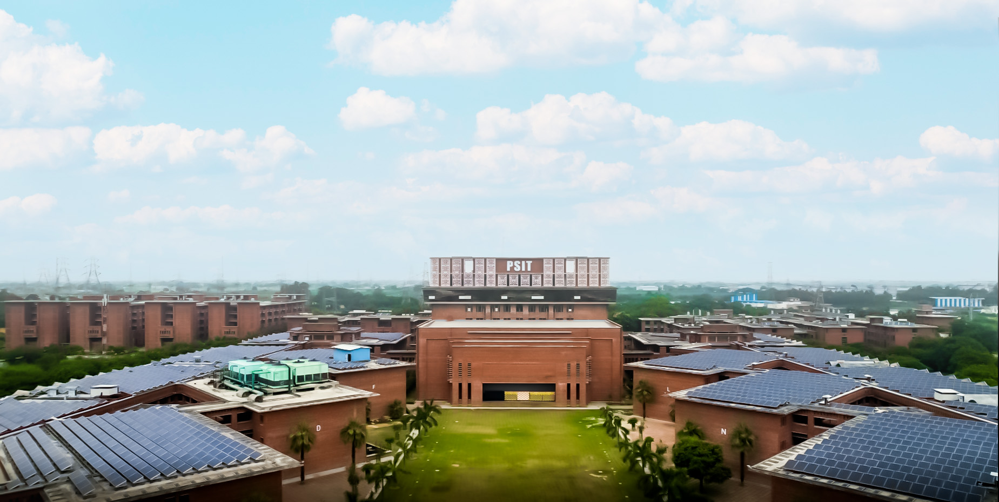
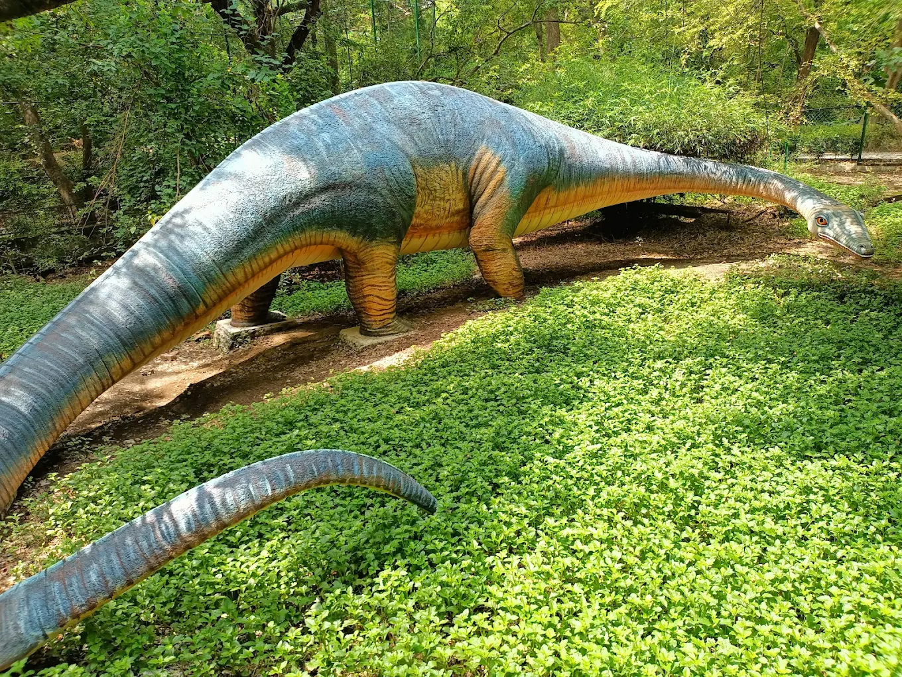

7th - International Conference on Intelligent Systems and Machine Learning (Hybrid Mode)
12-13 March, 2027
Pranveer Singh Institute of Technology (PSIT), Kanpur, India
12-13 March, 2027
Pranveer Singh Institute of Technology (PSIT), Kanpur, India


| Event | Date |
|---|---|
| Due Date of Paper Submission | 20 December, 2026 |
| Notification | 3 February, 2027 |
| Last Date of Registration | 10 February, 2027 |
| Camera Ready Paper Submission | 15 February, 2027 |
| Pre Conference Tutorial | 11 March, 2027 |
| Conference Date | 12-13 March, 2027 |



Pranveer Singh Institute of Technology (PSIT), Kanpur, established in 2004, is a premier institution known for academic excellence and innovation. With NAAC A+ and NBA accreditations, PSIT offers programs in Engineering, Business Management, and Computer Applications, blending rigorous academics with hands-on learning. The 140-acre campus is equipped with sustainable infrastructure including solar power, advanced labs, digital libraries, and eco-friendly systems. A distinguished faculty of 192 PhD scholars drives impactful research, patents, and government projects. PSIT fosters entrepreneurship through incubation programs and has nurtured 50+ startups. With 100% placement records, 300+ annual recruitment drives, and alumni across the globe, PSIT stands as a hub of intellectual empowerment and ethical leadership.
The Microsoft CMT service was used for managing the peer-review process for this conference.
